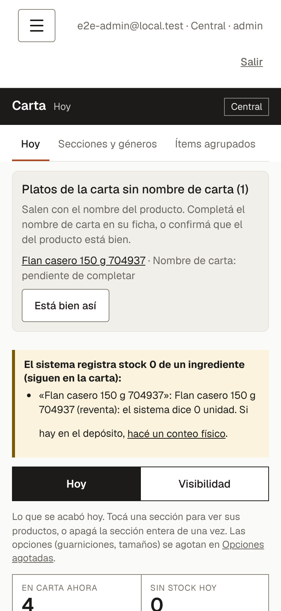
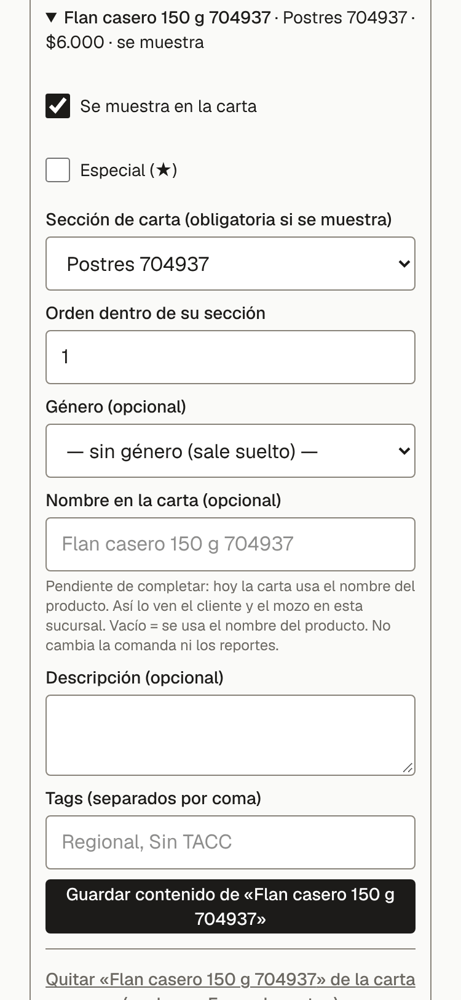
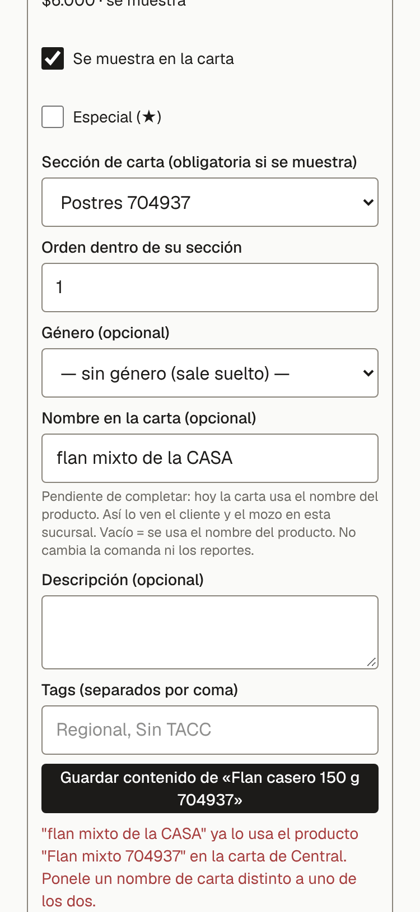
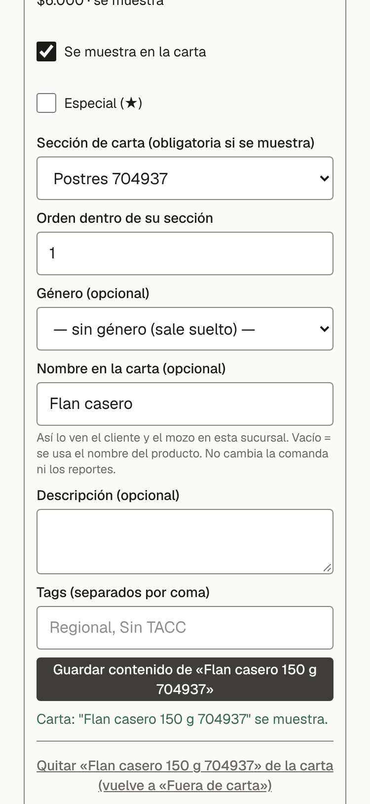
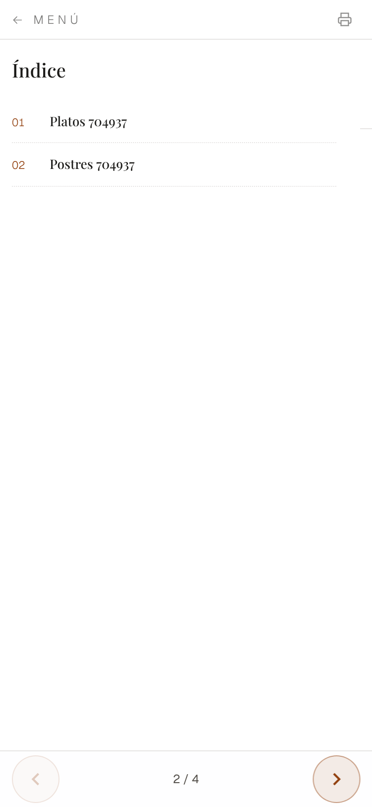
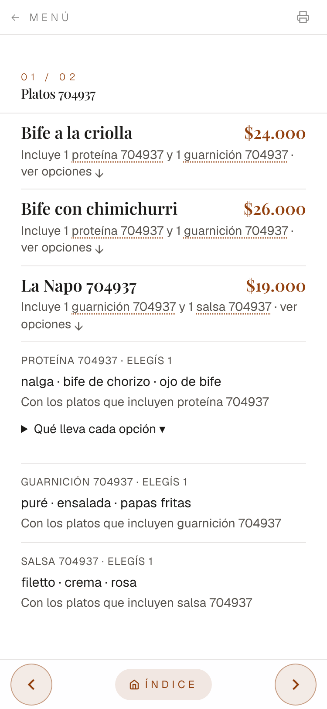
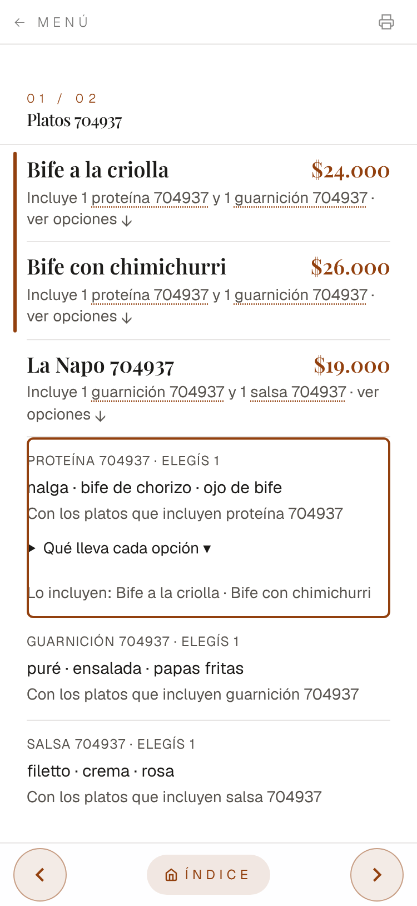
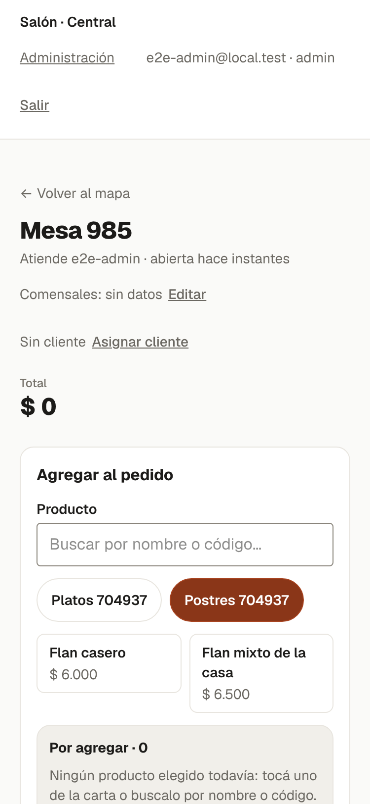

Nombre en la carta — lo que se ve (celular, 375 px)
Datos de demostración: base «BIFE-» (Bife a la criolla / Bife con chimichurri; proteína Nalga, Bife de chorizo, Ojo de bife; guarniciones Puré, Ensalada, Papas fritas), una milanesa con guarnición y salsa y un «Flan casero 150 g».

1. Lista «Platos de la carta sin nombre de carta». Los platos visibles sin nombre de carta siguen saliendo con el nombre del producto, pero acá figuran «pendiente de completar», con el botón «Está bien así» (copia el nombre a propósito y queda registrado).

2. Ficha «En la carta» del producto. Campo nuevo «Nombre en la carta (opcional)», con el aviso «Pendiente de completar». Vacío = se usa el nombre del producto.

3. Nombre repetido. Si otro plato de la misma carta ya usa ese nombre (sin distinguir mayúsculas ni tildes) no se guarda y dice con quién choca: «"…" ya lo usa el producto "…" en la carta de Central. Ponele un nombre de carta distinto a uno de los dos.»

4. Nombre guardado. Con un nombre distinto, queda guardado y la vista previa lo usa.

5. Carta pública. «Incluye 1 proteína y 1 guarnición · ver opciones ↓». Antes: «Incluye proteína y guarnición · elegí abajo ↓» (la carta no toma pedidos, por eso ya no dice «elegí»).

6. Bloques al pie. Cada bloque dice cuántas se eligen («elegís 1») y «Con los platos que incluyen …». Antes: «Con los platos que dicen «Incluye …»».

7. Al tocar «proteína». El bloque se ilumina y dice «Lo incluyen: Bife a la criolla · Bife con chimichurri» (los renglones que el cliente lee, no «BIFE-»). Antes: «Va con: BIFE-» (el nombre interno). «Qué lleva cada opción ▾» antes decía «Ver detalle ▾».8. Un plato con nombre de carta. «Flan mixto de la casa» se ve con el nombre de carta; el interno no aparece.

9. Selector del mozo. El botón del plato usa el nombre de carta; el buscador encuentra por el nombre de carta y por el interno. La lista «Por agregar», la comanda y el ticket siguen con el nombre interno.
Lo que NO cambia
Ticket, comanda de cocina, stock y reportes. Los precios. El selector del mozo por renglones y el ticket van en otras PRs.